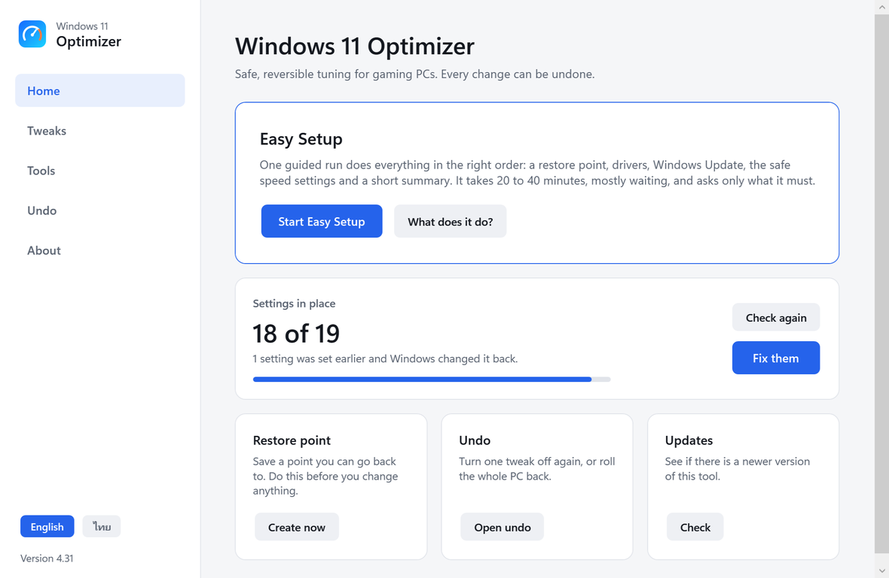
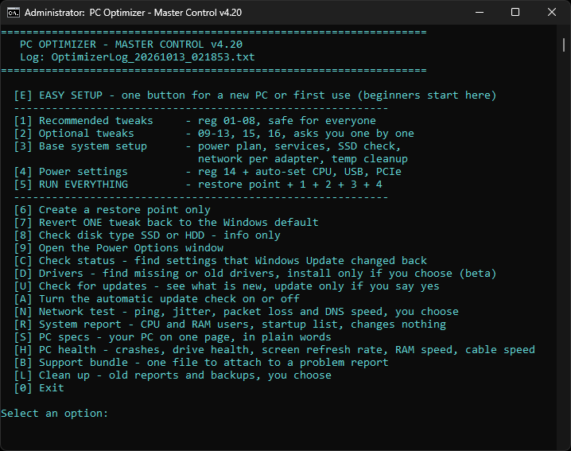

Safe, reversible tuning for Windows 11 gaming PCs. One button does the job in the right order, and every change can be undone.
User manual, version v4.31
| It does | It does not |
|---|---|
| Make a restore point before it changes anything | Delete your files or games |
| Apply documented registry and power tweaks, each with its own undo file | Edit game files, inject into games or add overlays |
| Install recommended drivers from Windows Update, never a maker's graphics driver or firmware | Install third-party programs or "driver updater" tools |
| Show your PC specs, health and crashes in plain words | Promise FPS numbers: the gains are small and depend on the game |
| Update itself only after you say yes, with a SHA-256 check | Send your data anywhere: it contacts github.com for updates and Microsoft for drivers |
Easy Setup shows its plan first and asks before it starts. Press Q at that prompt to leave without changing anything.
You should see a file named win11-optimizer.zip (about 1 MB) in your Downloads folder.
You should see the files below. Only three of them are for you to open.
You should see a black window titled "Easy Setup".
What the plan looks like. Your list may differ slightly: a laptop or no internet changes lines 4 and 8.
It prints "Step 3 of 10" and so on. Most steps need nothing from you.
| Step | What you see | What you do |
|---|---|---|
| 1 Update check | "Check for a newer version of this tool now?" | Press Enter. If a newer version exists, you may update. |
| 2 Restore point | "Making the safety point... 1 to 5 minutes" | Wait. Do not close the window. |
| 3 Save the state | "Saved how the PC is now" | Nothing. |
| 4 Internet | "The internet works." or "No internet" | No internet: plug in a cable or connect Wi-Fi and press R. Press S to skip the online steps. The settings still apply. |
| 5 Windows Update | The Windows Update page opens | Click Check for updates, install everything, come back to the black window and press Enter. Press S to skip this step. |
| 6 Drivers | "Drivers installed: 0. ..." | Nothing. If the graphics card has only the basic driver, it offers the maker's download page: press Y to open it. |
| 7 Restart | "Windows needs a restart..." (only when it does) | Press R. After the restart, open 0_Easy_Setup again and press Enter at "Continue where it stopped?" |
| 8 Settings | "Applying the settings..." about 1 minute | Nothing. |
| 9 DNS | "Test the internet speed and pick a faster DNS?" | Press Enter (No). The effect is small. |
| 10 Summary | The SUMMARY screen, after 30 seconds to 2 minutes | Read it (next step). |
A click selects text and pauses the program. If the title bar starts with Select, press Esc and it continues.
Example only. Your numbers will differ.
After a big Windows update, press C in the main menu (1_Start_Here) to find settings that Windows reset and put them back.
The program Win11 Optimizer.exe is in the main folder, next to the three .bat files. It needs no installation. Windows asks for administrator rights once when it starts. It shows the same things as the text menu, with buttons and switches, and it only starts the scripts of this tool. Use it or the .bat files: the results are the same.

| Page | What you do there |
|---|---|
| Home | Press Start Easy Setup, choose how you use the PC, and it runs in its own window. Below it you see how many settings are in place, and Fix them if Windows changed some back. |
| Tweaks | One switch per tweak (01 to 16 and 18 to 25) with its state: On, Off or Changed by Windows. A restore point is offered before the first change. Turn on all recommended applies tweaks 01 to 08. |
| Tools | PC specs, PC health, System report and Support bundle run inside the window and show their result. Network test, Drivers, Clean up and Check status open their own window because they ask you questions. |
| Undo | Turn one tweak off on the Tweaks page, roll the PC back with System Restore, or open the Backup and Logs folders. |
| About | Version, the manuals, GitHub and the update check. |
| English / Thai | The two small buttons at the bottom of the side bar change the language of the window. The text of the tools that open in their own window stays English. |
The program is not code-signed, so SmartScreen may say "Windows protected your PC". Click More info, then Run anyway. You can also use the .bat files, which do the same. The source code is in the app folder of the GitHub project.
| # | Step | What it does | Why at this point |
|---|---|---|---|
| 1 | Newer version | Asks if you want to check; if a newer version exists you can update this tool. | You start with the latest fixes. |
| 2 | Restore point | Creates the System Restore point Before_PC_Optimizer. | Everything after it can be undone. |
| 3 | Remember now | Counts the speed settings in place and the devices without a driver, and saves the PC specs. | To show before and after. |
| 4 | Internet | Checks the connection. If there is none, explains how to fix it (a network driver from the board or laptop maker, copied with a USB drive). | Updates and drivers need it. |
| 5 | Windows Update | Opens Windows Update. You press Check for updates, install everything and restart if it asks. | Updates can change settings, so they come first. |
| 6 | Drivers | Installs the recommended drivers from Windows Update (network, sound, Bluetooth, chipset). No full driver copy: the restore point covers it. If the graphics card only has the basic driver, opens the maker's download page. | The same safe system as 7_Driver_Check. |
| 7 | Restart | Offered only when Windows needs it. Run the file again to continue. | New drivers need it. |
| 8 | Safe speed settings | Menu 1, 3 and 4. The gaming answer adds mouse, keyboard, timer resolution, CPU boost, windowed-game optimization, Game Mode and the network adapter setting. Maximum also adds fullscreen exclusive, the Ndu fix, drivers only from you, startup programs at once, quick menus, End task and background apps. A laptop skips what makes it hotter or drains the battery. | Last, so updates and drivers cannot undo them. |
| 9 | Faster DNS | Optional network test and DNS choice. The default is no. | Small effect, never forced. |
| 10 | Check and summary | Settings in place before and after, devices without a driver, things worth a look, how to undo, and a restart reminder. | You see the result on one page. |
Driver cleanup, deep file cleanup, network reset, changing DNS without asking, removing Windows apps and installing programs. They are for special cases and are in the main menu and repair-tools. Memory Integrity off (13) is applied only when you pick Maximum and type YES.
The PC is kept awake while it runs. Every run is saved as EasySetup_date-time.txt in the Logs folder. To see the plan without changing anything, start it from a command window with -Preview.
| Your situation | Open or press | What happens |
|---|---|---|
| New Windows, first time, or not sure | 0_Easy_Setup (or E in the menu) | Everything in the right order, with a plan, a restore point and a summary. |
| Windows update reset some settings | C | Lists what changed and puts it back after you confirm. |
| I want to choose each optional tweak (09 to 25) myself | 2, or 5 for the whole set | Asks one by one. Tweak 13 needs a typed YES. |
| I want every optional tweak without questions | Easy Setup, then Yes to games, then Yes to Maximum | One go. Memory Integrity off (13) still needs its own typed YES. |
| One tweak feels wrong (for example the mouse) | 7, then the number | Puts back the Windows default for that one tweak. |
| Everything feels wrong | 2_Revert_Everything | Rolls the whole PC back with System Restore. It restarts the PC. |
| Check or fix drivers | D | Scans, lists, and installs only what you choose. |
| Web pages or the game connection feel slow | N | Ping, jitter, packet loss and DNS speed. |
| See my specs, health or what uses CPU and RAM | S, H, R | One-page reports. They change nothing. |
| Ask someone for help | B | Makes one file with private details replaced. Nothing is sent. |
| E: Easy Setup | 5: Run Everything | |
|---|---|---|
| Settings it applies | Tweaks 01-08, base setup, power settings. The games answer adds 10, 11, 15, 16, 21, 22 and 23. Maximum adds 09, 12, 18 to 20, 24 and 25 as well. Tweak 13 only after a typed YES. | Tweaks 01-08, base setup, power settings, and it asks about 09 to 25 one by one. |
| Questions | One or two at the start | One per optional tweak |
| Also does | Update check, Windows Update guide, drivers, DNS choice, before and after summary, continues after a restart | Nothing else |
| Time | 20 to 40 minutes | A few minutes |
Both make a restore point named Before_PC_Optimizer. Running either again makes a new one with the same name, and 2_Revert_Everything goes back to the newest.
The newest one named Before_PC_Optimizer. Running Easy Setup or key 5 again makes a new one with the same name, so the older one is no longer the target.
| Status | Meaning | What the script does |
|---|---|---|
| OK | The value is still as the script set it. | Nothing. |
| CHANGED | A value was changed, for example by a Windows update. | Can re-apply it. |
| MISSING | The value is not there at all. | Can re-apply it. |
| NOT CHOSEN | An optional tweak (09-13, 15, 16, 18-25) you never answered. | Asks: Y apply, N not now, X never ask again. |
| SKIPPED | You skipped or reverted it. | Does not ask or change it. |
| UNKNOWN | Cannot be read, or this PC does not have the option. | Information only. |
| Symptom | What it means | What to do |
|---|---|---|
| A blue "Windows protected your PC" window | SmartScreen does not know the file. Normal for a new .bat. | Click More info, then Run anyway. Next time, unblock the ZIP before you extract it (Quick start, step 2). |
| Antivirus blocks or deletes a file | Some antivirus programs flag .bat files that edit the registry. | Check that you downloaded from the project page and read the file. Never turn antivirus off. If it still blocks, do not use the file. |
| "Please right-click this file and choose Run as administrator" | You opened it with a normal double-click. | Right-click the file and choose Run as administrator. Nothing was changed. |
| The window freezes. The title bar starts with "Select" | You clicked inside the black window, which pauses it. | Press Esc. It continues. |
| "The argument ... does not exist" or "not recognized" after typing a command | A typo or the wrong folder. | Open the extracted folder, type cmd in the address bar, press Enter, and copy the command instead of typing it. |
| "The safety point could not be made" | System Protection is off for drive C:. | Start menu, type Create a restore point, select C:, press Configure, choose Turn on system protection, press OK. Run Easy Setup again. |
| "No internet" in step 4 | No connection, or the PC lacks a network driver. | Plug in a cable or connect Wi-Fi and press R. With no network driver, download it from your motherboard or laptop maker on another PC and copy it by USB drive. Or press S to skip the online steps. |
| The Windows Update page did not open | Some PCs block the shortcut. | Open Settings, then Windows Update, by hand. Or press S to skip this step. |
| "An earlier Easy Setup was started... Continue?" | You closed it halfway or restarted. | Press Y (or Enter) to continue where it stopped. Press N to start again. |
| Settings are back to normal after a Windows update | Windows reset some values. This happens. | Press C in the main menu and confirm. |
| The PC is hotter or the fans are louder | Ultimate Performance and CPU boost keep the processor fast. | Undo 16 (menu 7, then 16), or pick Balanced in Power Options. On a laptop, skip the optional tweaks. |
| The mouse feels odd | Tweak 10 turned off pointer acceleration. | Menu 7, then 10. |
| A game complains about security or anti-cheat | Anti-cheat rules belong to the game maker. This tool changes Windows settings only. | Open S (PC specs) to see Secure Boot and TPM, which some games need. If you turned Memory Integrity off (13), undo it: menu 7, then 13. |
| Something broke after a driver install | A new driver does not suit the device. | Device Manager, the device, Roll Back Driver. Or use System Restore and pick Before_Driver_Install. |
| I want help from someone | The support bundle collects what they need. | Press B. Read the file in Logs, then attach it to an issue at github.com/Kensukeimagery/win11-optimizer. |
| Word | Meaning |
|---|---|
| Administrator | A Windows account that may change system settings. Programs that change settings need "Run as administrator". |
| Restore point | A snapshot of Windows settings that System Restore can return to. It does not touch your documents. |
| Registry | The database where Windows stores its settings. Each tweak here changes a few values in it. |
| .reg file | A small text file that sets registry values. You can open it in Notepad and read it. Every tweak has one, and one undo file. |
| Driver | Software that lets Windows talk to a device such as the graphics card or sound chip. |
| Windows Update | Microsoft's service for fixes and many drivers. |
| SmartScreen | A Windows check that warns about files it does not recognise. |
| SHA-256 checksum | A fingerprint of a file. The updater compares it to the published one to make sure the download is intact. |
| BIOS / UEFI | The firmware settings screen you reach at power-on (often Delete or F2). |
| XMP / EXPO | A memory profile in the BIOS that runs the RAM at its rated speed. |
| Secure Boot, TPM | Security features that Windows 11 and some games, such as Valorant, require. The PC specs page shows whether they are on. |
| FPS and 1% lows | Frames per second. The 1% lows are the slowest moments, and they decide how smooth a game feels. |
| Ping, jitter, packet loss | Delay to a server, how much that delay jumps around, and the share of packets that never arrive. Jitter is what you feel as rubber-banding. |
| DNS | The service that turns a website name into an address. It is used once when you connect and does not change in-game ping. |
| Refresh rate (Hz) | How many times per second the screen updates. A 144 Hz screen running at 60 Hz looks like input lag. |
| Memory Integrity | A Windows security feature (HVCI). Turning it off can raise FPS on some PCs but protects the PC less. |
| Power plan | A set of power rules. Ultimate Performance keeps the processor fast and never sleeps cores. |
| Core parking | Windows putting idle processor cores to sleep to save power. The power settings here turn it off. |
| SSD, HDD | Solid-state drive and hard disk drive. Windows and games run faster from an SSD. |
It makes a restore point first, changes only documented Windows settings, and each tweak has an undo. You can read every file before you run it. Use it only on your own PC, and keep the restore point.
Slightly, and only in some games. The tweaks are small. GPU driver settings, in-game settings, XMP/EXPO and cooling matter far more. Be careful with any program that promises large gains.
It does not edit game files, inject code or add overlays. It changes Windows settings only. Anti-cheat rules belong to each game maker, so check yours.
The update check contacts github.com and sends nothing about you. Driver search uses Windows Update. The network test pings public DNS servers when you start it. The support bundle replaces private details and is never sent.
It is built for desktops. On a laptop Easy Setup skips the tweaks that raise heat and drain the battery.
Yes. Running again is safe. It makes a new restore point with the same name, and 2_Revert_Everything goes back to the newest one.
There is no installer. Undo the tweaks with 2_Revert_Everything or menu 7, then delete the folder.
In the Logs folder next to the program. The newest three of each kind are kept.
No. It is free and open source (MIT license).
| File / folder | Purpose |
|---|---|
| 0_Easy_Setup (Run as Administrator).bat | ONE BUTTON for a new Windows install and for beginners: restore point, drivers, Windows Update (guided), safe settings, summary. |
| 1_Start_Here - PC_Optimizer_Master (Run as Administrator).bat | Main menu. Start here; everything is reachable from it. |
| 2_Revert_Everything - System_Restore (Run as Administrator).bat | Roll the whole PC back with System Restore (serious problems only). |
| More Tools/ | The extra tools below (each one also opens from the main menu). Keep this folder next to the main files. |
| 3_Check_Status (Run as Administrator).bat | Check which tweaks are still applied, for example after a Windows update. |
| 4_Network_Test.bat | Ping, jitter, packet-loss and DNS speed test. Changes nothing unless you choose a DNS at the end. No administrator rights needed to run it. |
| 5_System_Report.bat | Read-only report: what uses your CPU and RAM, what starts with Windows, disk space, GPU driver age. No administrator rights needed. |
| 6_Check_For_Updates.bat | Looks for a newer version on GitHub and installs it only if you say yes. No administrator rights needed. |
| 7_Driver_Check (Run as Administrator).bat | BETA. Finds devices with no driver and lists Windows Update driver updates. Installs only if you choose. |
| S_PC_Specs.bat, 8_PC_Health.bat, 9_Support_Bundle.bat | Read-only: your PC on one page, a health check (crashes, drives, battery, refresh rate, RAM and cable speed), and ONE file with the reports for a problem report (private details replaced, nothing sent). No administrator rights needed. |
| tools/ | PowerShell helpers used by the menu, the status check, the two tools above, the DNS change and the updater. Do not delete. |
| reg/1_Recommended | Files 01-08: safe for most PCs. |
| reg/2_Optional | Files 09-13, 15, 18-20 and 23-25: the script asks about each one. (16, 21 and 22 are set by helper scripts, not .reg files; see the optional tweaks.) |
| reg/3_Power | File 14: unlocks hidden CPU options in Power Options. |
| reg_undo/ | One undo file per tweak (Windows defaults), used by menu 7. |
| repair-tools/ | Four stand-alone repair tools. Unrelated to the Master menu. |
| Backup/ (created when you run) | Copy of every key before it is changed, in a dated folder. |
| Logs/ (created when you run) | The log of every command and the report of every tool. The newest 3 of each kind are kept and older ones are removed automatically (menu L changes the number). |
| Key | What it does |
|---|---|
| E | Easy Setup: one button for a new PC or first use |
| 1 | Recommended tweaks 01-08, safe for everyone |
| 2 | Optional tweaks 09-13, 15, 16, 18-25, asked one by one |
| 3 | Base setup: power plan, services, SSD check, network per adapter, temp cleanup |
| 4 | Power settings: tweak 14 and the automatic CPU, USB and PCIe settings |
| 5 | Run everything: restore point, then 1, 2, 3 and 4 |
| 6 | Create a restore point only |
| 7 | Revert one tweak to the Windows default |
| 8 | Show the disk type (SSD or HDD) |
| 9 | Open the Power Options window |
| C | Check status: find settings that Windows Update changed back |
| D | Drivers: find missing or old drivers (beta) |
| U | Check for updates; update only if you say yes |
| A | Turn the automatic update check on or off |
| N | Network test: ping, jitter, packet loss and DNS speed |
| R | System report: CPU and RAM users, startup list |
| S | PC specs on one page, in plain words |
| H | PC health: crashes, drives, refresh rate, RAM speed, cable speed |
| B | Support bundle: one file to attach to a problem report |
| L | Clean up old reports and backups |
| 0 | Exit |

What it checks: all 21 .reg files (read from the same files that are applied), the power plan (Ultimate Performance, or High Performance if Ultimate is unavailable), the four power values, Prefetcher (3 is the Windows default; 0 on an SSD is accepted), TcpAckFrequency and TCPNoDelay on every adapter, and the DiagTrack / dmwappushservice services. Optional 15, 16, 21, 22 and (once used) 17 are checked too (16: boost mode 2 and preference 0 while plugged in). On an SSD it also reads whether TRIM is on (it is by default) and can turn it back on.
Limits: it tells you a value is still there, not that it still has an effect (item 08 can show OK on a GPU that does not support GPU scheduling). Values under GameConfigStore (01, 09) are rewritten by Windows and the Xbox Game Bar, so CHANGED there is common. Adding a new VPN or Wi-Fi adapter makes Network show CHANGED until it is configured.
| Item | What it does | Note |
|---|---|---|
| Power plan | Uses Ultimate Performance; High Performance if that is missing; leaves Balanced if neither exists. | The plan GUID is remembered, so repeat runs do not create duplicates (v3 did). |
| Services | Windows Search and Print Spooler on; DiagTrack and dmwappushservice off. | "already running" in the log is normal. |
| Prefetcher | Checks the type of the drive Windows is installed on (C:) first: HDD kept on, SSD left as Windows has it (Windows manages it there), unknown type left alone. | Stops you disabling it on an HDD, which would slow it down. |
| Network | Sets TcpAckFrequency and TCPNoDelay on every network adapter. | v3 set these globally, where Windows ignores them. Only affects games using TCP. Microsoft advises testing before changing these. |
| Old values | Removes MaxUserPort, TcpTimedWaitDelay and misplaced TCP values from v3. | None of them matter for gaming. |
| Temp files | Deletes the user's temporary files. | Files in use are skipped safely. |
Already automatic in v4, no need to do by hand: GPU scheduling (08), Delivery Optimization (07), USB selective suspend and PCIe power saving (menu 4), Game Bar DVR (01), Game Mode kept on (01), Enhance Pointer Precision (10, if you answered Y).
| Clear effect: do these | Where | Why |
|---|---|---|
| GPU power = Maximum Performance | NVIDIA Control Panel / AMD Software | Stops the card down-clocking under uneven load. |
| Network adapter power saving off | Device Manager > adapter > Power Management | Avoids ping spikes. |
| Add game folders to Defender exclusions | Virus & threat protection > Exclusions | Faster level loading. Does not turn Defender off. |
| Turn off GPU-software overlays | NVIDIA App / AMD Software > Settings | Less background CPU/GPU load. |
| Disable audio enhancements | Control Panel > Sound > Enhancements | Lower audio latency. |
| Cap FPS 3-4 below the refresh rate | In-game limiter, RTSS or NVIDIA Control Panel | Steadier frame times, lower input lag. |
| NVIDIA Reflex / Low Latency Mode | In-game setting, or NVIDIA Control Panel | Lower input lag when the GPU is the limit. |
| Shader Cache Size = Unlimited (NVIDIA) | NVIDIA Control Panel > Manage 3D settings | Fewer stutters from shaders being rebuilt. |
| Use a network cable, not Wi-Fi | Router to PC | The biggest fix for ping spikes and jitter. |
| Situational or small effect | Where | Why |
|---|---|---|
| Focus Assist while gaming | Settings > System > Notifications | No notifications stealing focus. |
| Xbox Game Bar fully off (if you do not use Win+G) | Settings > Gaming > Xbox Game Bar | One less background process. |
| Disable fullscreen optimizations per game | Right-click .exe > Properties > Compatibility | For older games with problems. |
| GPU vendor telemetry services off | services.msc | Less background work. |
| Move Automatic Maintenance | Control Panel > Security and Maintenance | No scans during games. |
| Transparency and HDR off if unused | Settings > Personalization / Display | Small saving. |
| Exclude game folders from Search indexing | Settings > Privacy & security > Searching Windows | Less disk I/O. |
| Stop unused background apps | Settings > Apps > Installed apps | Frees a little RAM. |
| Fixed-size page file | System Properties > Advanced > Virtual Memory | More stable over time. |
Make sure of: GPU drivers installed from the vendor directly (NVIDIA settings: GPU_Driver_Guide_EN.pdf), XMP/EXPO enabled in the BIOS, Variable Refresh Rate on if your monitor supports it, and games set to use the "High performance" GPU on dual-GPU laptops.
| What you see | Most likely cause | What to try |
|---|---|---|
| Router line is Fair or Poor | Wi-Fi signal, a bad cable, or other devices using the network. | Use a cable, move closer, pause other downloads and streams. |
| Router is Good, internet lines are Poor | Your internet provider or the line. | Restart the router; if it stays, contact the provider. |
| Router and internet Good, only the game server is bad | The route to that server, or the server itself. | Choose another server or region. Nothing on your PC fixes this. |
| Game server shows "No reply" | Many servers block ping. | Not a problem by itself. |
| Tool | FPS effect | Real benefit | Risk | For |
|---|---|---|---|---|
| WinUtil: Install tab | None | Installs several programs at once through winget | Low | Everyone |
| WinUtil: Tweaks tab | Almost none | Overlaps almost entirely with this project | Medium: may change values set here | Not recommended after this project |
| RemoveWindowsAI | Very little to none | Removes Copilot and background AI processes; saves some RAM and disk; privacy | High: force-removes packages Windows protects | People who never use AI, or PCs with 8 GB RAM or less |
irm https://christitus.com/win | iex
Backup Mode (removes everything):
& ([scriptblock]::Create((irm "https://raw.githubusercontent.com/zoicware/RemoveWindowsAI/main/RemoveWindowsAi.ps1"))) -nonInteractive -backupMode -AllOptions
Revert everything:
& ([scriptblock]::Create((irm "https://raw.githubusercontent.com/zoicware/RemoveWindowsAI/main/RemoveWindowsAi.ps1"))) -nonInteractive -revertMode -AllOptions
| Used for | Source / link |
|---|---|
| 03 SystemResponsiveness, Tasks\Games | Microsoft Learn - Multimedia Class Scheduler Service learn.microsoft.com/en-us/windows/win32/procthread/multimedia-class-scheduler-service Values below 10 are raised to 20; a value of 100 turns MMCSS off. |
| 04 Win32PrioritySeparation | Microsoft TechNet - Win32PrioritySeparation technet.microsoft.com/library/Cc976120 Default is 0x2, as in UNDO_04. |
| 07 Delivery Optimization | Microsoft Learn - Delivery Optimization reference learn.microsoft.com/en-us/windows/deployment/do/waas-delivery-optimization-reference |
| 08 GPU scheduling | Microsoft DirectX Blog - Hardware Accelerated GPU Scheduling devblogs.microsoft.com/directx/hardware-accelerated-gpu-scheduling/ Most users should not expect a big change. |
| 13 Memory Integrity | Microsoft Support - Options to optimize gaming performance in Windows 11 support.microsoft.com/en-us/windows/options-to-optimize-gaming-performance-in-windows-11-a255f612-2949-4373-a566-ff6f3f474613 Confirms an effect on some PCs and warns of higher exposure to threats. |
| Menu 3: TCP per adapter | Microsoft Support KB328890 - TcpAckFrequency support.microsoft.com/kb/328890 Set per interface GUID; Microsoft advises against changing defaults without testing. |
| Menu 4, power plans | Microsoft Learn - Powercfg command-line options learn.microsoft.com/windows-hardware/design/device-experiences/powercfg-command-line-options |
| Menus 5, 6: restore point | Microsoft Learn - Checkpoint-Computer learn.microsoft.com/powershell/module/microsoft.powershell.management/checkpoint-computer Normally one restore point per day, so the script sets SystemRestorePointCreationFrequency = 0 first. |
| 15 Timer resolution | Microsoft Learn - timeBeginPeriod function learn.microsoft.com/en-us/windows/win32/api/timeapi/nf-timeapi-timebeginperiod Describes the per-process change since Windows 10 2004 and Windows 11, and the extra power use of a higher resolution. |
| 16 CPU boost | Microsoft Learn - PERFBOOSTMODE and processor power management options learn.microsoft.com/en-us/windows-hardware/customize/power-settings/options-for-perf-state-engine-perfboostmode learn.microsoft.com/en-us/windows-hardware/customize/power-settings/configure-processor-power-management-options Boost mode 2 = Aggressive. Energy performance preference runs 0-100 %. |
| 18 Driver updates | Microsoft Learn - Policy CSP - Update (ExcludeWUDriversInQualityUpdate) learn.microsoft.com/en-us/windows/client-management/mdm/policy-csp-update |
| 21 Windowed games | Microsoft Support - Optimizations for windowed games in Windows 11 support.microsoft.com/en-us/topic/3f006843-2c7e-4ed0-9a5e-f9389e535952 Names the setting and what it does. The registry value that stores it is not documented there. |
| 22 Network adapters | GitHub - farag2/Sophia-Script-for-Windows (function NetworkAdaptersSavePower) github.com/farag2/Sophia-Script-for-Windows Where the idea comes from. The helper clears the Device Manager checkbox through the WMI class MSPower_DeviceEnable. |
| 20 Quick menus | Microsoft Learn - SystemParametersInfoA (menu show delay, mouse hover time) learn.microsoft.com/en-us/windows/win32/api/winuser/nf-winuser-systemparametersinfoa Describes the two settings; the registry value names are well known but not documented there. |
| WinUtil | GitHub - ChrisTitusTech/winutil (README) github.com/ChrisTitusTech/winutil |
| RemoveWindowsAI | GitHub - zoicware/RemoveWindowsAI (README) github.com/zoicware/RemoveWindowsAI |
| repair-tools: SFC / DISM | Microsoft Support - Use the System File Checker tool support.microsoft.com/help/929833 Run DISM before SFC, the order used here. |